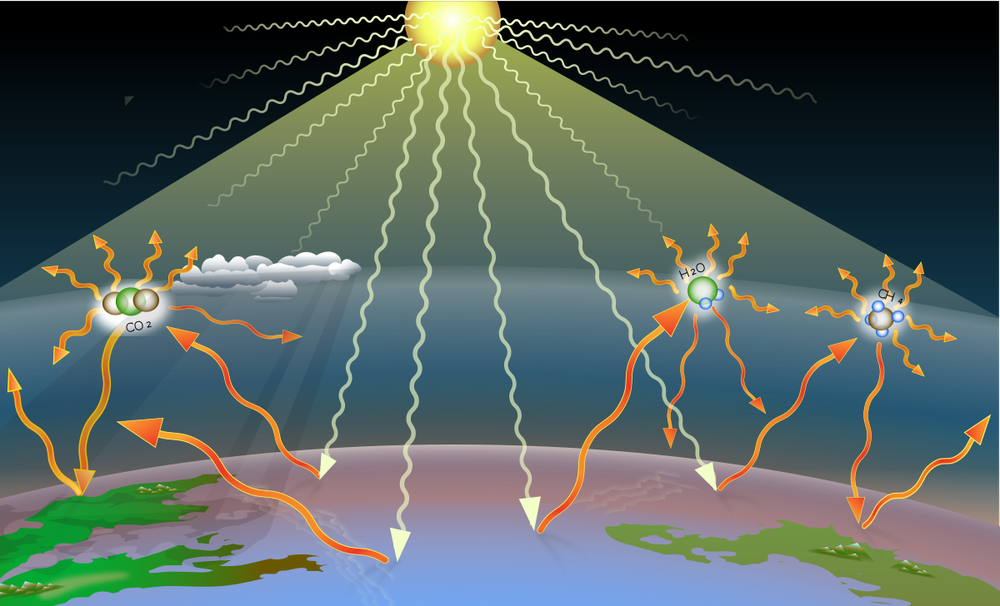

What Are Greenhouse Gases?

Greenhouse gases (GHGs) trap heat in the atmosphere. Common GHGs include carbon dioxide (CO₂), methane (CH₄), and nitrous oxide (N₂O).
The Connection Between GHGs and Climate Change
Human activities have significantly increased GHG levels, causing global warming and extreme weather events.
Why Food Production Matters
Food production contributes up to 30% of global GHG emissions, with significant variations across food types.
What This Project Aims to Explore
Explore how different foods impact the environment and experiment with creating sustainable diets.